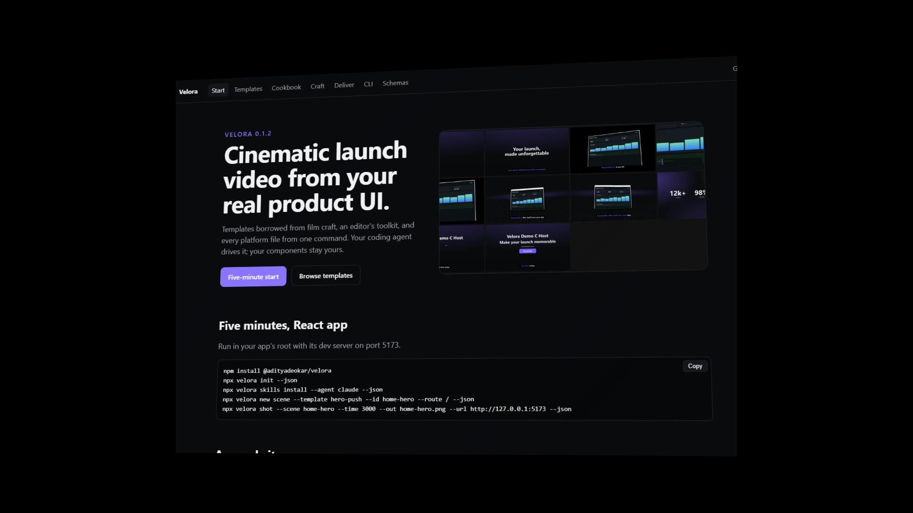

<!-- Velora website hero: Website hero loop (8 s). Paths are relative to this file; adjust them to where you host the files. -->
<picture class="velora-hero-poster">
  
</picture>
<video class="velora-hero" autoplay muted loop playsinline preload="metadata" poster="hero.poster.jpg" width="1920" height="1080" aria-label="Website hero loop (8 s)">
  <source src="hero.webm" type="video/webm">
  <source src="hero.mp4" type="video/mp4">
</video>
<style>
  .velora-hero, .velora-hero-poster img { display: block; width: 100%; height: auto; aspect-ratio: 1920 / 1080; }
  .velora-hero-poster { display: none; }
  @media (prefers-reduced-motion: reduce) {
    .velora-hero { display: none; }
    .velora-hero-poster { display: block; }
  }
</style>
